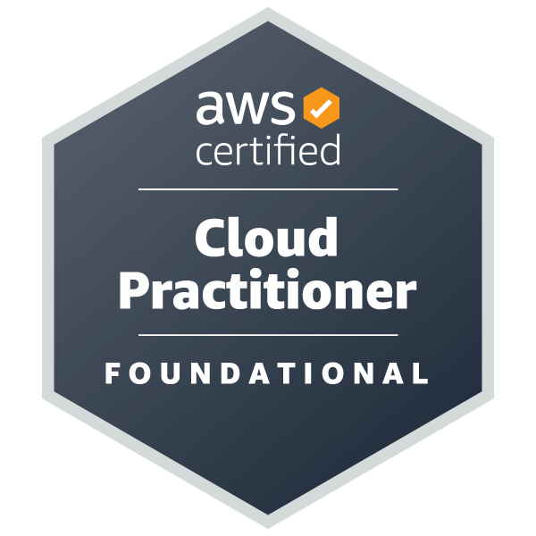

Visitors:
Bridgend, UK +44 7946 533132
Email:graeme@ogmorevalleywebsites.co.uk
Websites: Ogmore Valley Websites | AWS Portfolio | LinkedIn Profile
Experienced electronics/quality engineer transitioning to remote web developer/AWS Solutions Architect. Passionate about learning new skills and applying them to projects. Very keen to apply lessons learned to real world applications.
Jan 2023 - present
Ogmore Valley Websites, Bridgend, UK
1991 - 2022
Panasonic Manufacturing (uk) Ltd, Cardiff, UK
1988 - 1991
Quality Engineering Design, Abergavenny, UK
1986 - 1988
AB Electronic Products PLC, Abercynon, UK
AWS Solutions Architect Associate, e-Careers, on-line
2023 - 2025
BSc Electrical and Electronics Engineering, University of Glasgow, UK
1982 - 1986